32×32


64×64

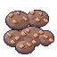
16×16
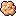
16×16


32×32
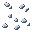

64×64

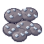
16×16
16×16

32×32


64×64

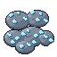
16×16
16×16

32×32
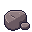

32×32
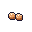
32×32
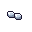
32×32
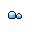
ore_*, vein_*,
icon_*, pickup_* (ferro, silício, gelo) e rock_small, com os mesmos nomes e tamanhos de assets/sprites/.
Gerado por tools/sprites/ores_raw.py (autocontido); --check confirma pixel a pixel contra os PNGs do freela.
Lingotes e wafers ficaram fora. Nada foi copiado pra assets/: está em pendentes/ esperando a aprovação do dono.Colunas: tamanho real (antes, depois) e ampliado (antes, depois), sobre xadrez. Os fleck_* são um extra proposto (ver desvios).
| arquivo | antes 1:1 | depois 1:1 | antes ampliado | depois ampliado |
|---|---|---|---|---|
| ore_iron.png 32×32 | | | ||
| vein_iron.png 64×64 | |  | | |
| icon_iron.png 16×16 |  | |||
| pickup_iron.png 16×16 | | | ||
| ore_silicon.png 32×32 |  | | ||
| vein_silicon.png 64×64 | |  | | |
| icon_silicon.png 16×16 | ||||
| pickup_silicon.png 16×16 | | |||
| ore_ice.png 32×32 | | | ||
| vein_ice.png 64×64 | |  | | |
| icon_ice.png 16×16 | ||||
| pickup_ice.png 16×16 | | |||
| rock_small.png 32×32 |  | | ||
| fleck_iron.png 32×32 |  | |||
| fleck_silicon.png 32×32 |  | |||
| fleck_ice.png 32×32 |  |
Cada cena: chão da região, um morro orgânico com ferro, silício e gelo no topo (grade dual do jogo, game/hills.py), os 3 veios, rochas pequenas com o cristal de cada minério,
e embaixo os pickup_* (em cima) e icon_* (embaixo) em 1:1. Ampliado 2×.
Leitura, a olho: o veio e a rocha leem bem nas 4 regiões. Já as pintas do ore_* no topo do morro são bem menores e mais finas que as pepitas de hoje: sobre o basalto e a faixa gelada o silício (cinza claro, 1 a 2 px) e o gelo ficam discretos de longe. Fica pro dono julgar se é o que ele quer na parede; o gelo e o ferro ainda saltam, o silício é o mais fraco.
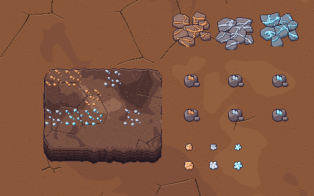
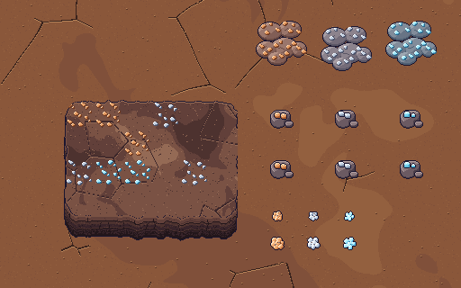
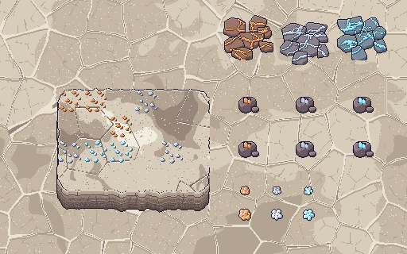
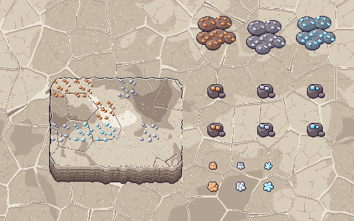
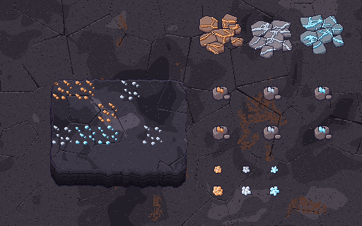
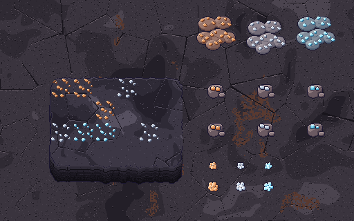
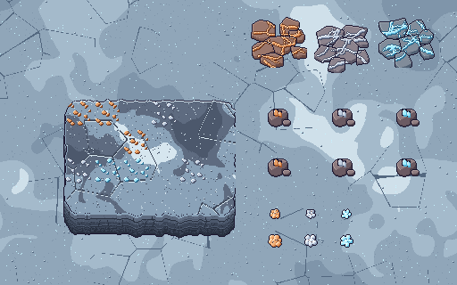
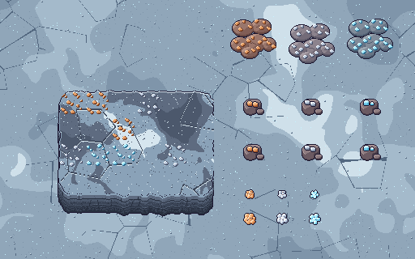
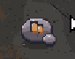
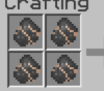
| antes (rock_small + fleck por código) | depois: variação 0 e 1 | |
|---|---|---|
 | 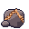 | |
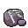 | 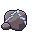 | |
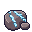 |  | |
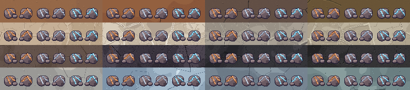
Ferro (laranja) e gelo (ciano) leem em tudo. O silício (cinza azulado claro) é o de menor contraste, sobretudo no salar claro e na faixa gelada: a fenda escura em volta segura a leitura.
vein_*): veja a seção "Veio orgânico" abaixovein_linha_{iron,silicon,ice}.png. Se o dono aprovar, vira o vein_* oficial.Colunas: atual do jogo · freela (pintas) · orgânico. Sobre planalto (esq.) e faixa gelada (dir.), estágio árido.
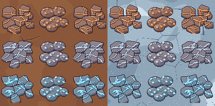
Ampliado 4× (ferro, silício, gelo, magmatita):

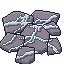
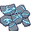
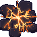
machines_r3d.py, magma_rock): basalto escuro (#6a5f72 · #4e4558 · #3a3244 · #2a2333) com veios de lava incandescente (laranja #ff9a3d, vermelho #e0602a, toques de amarelo #ffd27a). O brilho fica só dentro das fissuras: nenhum halo fora da pedra, e o contorno é o normal da família (#1b1630). Mantive a rede de rachaduras finas espalhadas pela pedra, que combina com o visual do aquecedor. Mesmos tamanhos do contrato. Nasce só perto das fumarolas (bíblia §12, "Magmatita"; sem veio por enquanto, o vein_magmatite fica pronto pro gancho da drill nv.2 na fumarola).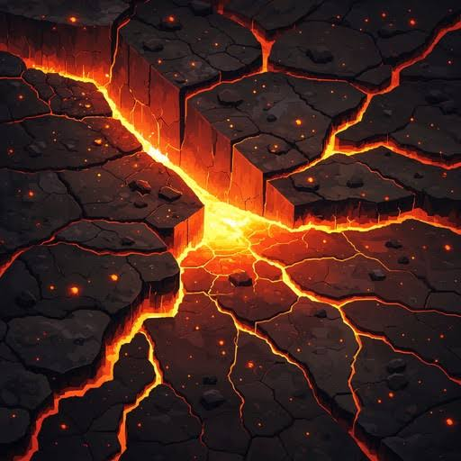
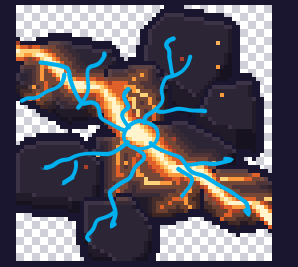
v4 · lava radial. A fenda diagonal reta ("raio de Zeus") saiu; as placas de basalto continuam as mesmas (o dono gostou da distribuição). Agora a lava nasce numa poça incandescente no centro (núcleo amarelo-branco #fff4cc) e 8 rachaduras tortas irradiam pras bordas, buscando as juntas entre as placas, ramificando e afinando até 1 px perto das bordas; a mais grossa é a perto do centro. O brilho que vaza tinge as quinas das placas vizinhas (só dentro da silhueta, mais forte perto do centro, sem halo fora) e as brasas ficam. Do estilo da referência de lava aproveitei basalto quase preto com desnível, o gradiente amarelo-branco, laranja, vermelho e a luz vindo só da lava (desenho original). 64×64, mesma âncora, contorno #1b1630. Animação (4 quadros, 256×64): o núcleo da poça pulsa e o calor corre do centro pras pontas das rachaduras; as brasas piscam. As rochas e o minério de morro seguem como estavam.
Cada célula, da esquerda pra direita: ferro, silício, gelo e magmatita, 2 variações de cada.
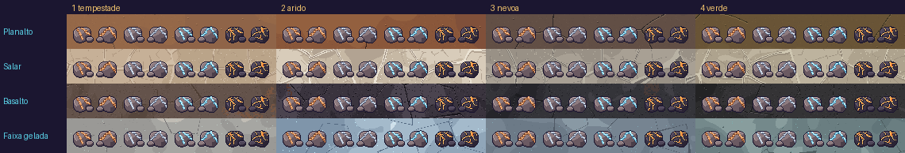
| arquivo | 1:1 | ampliado |
|---|---|---|
| ore_magmatite.png | 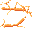 | |
| icon_magmatite.png | ||
| pickup_magmatite.png | 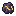 | |
| rock_small_magmatite_0.png | 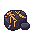 | |
| rock_small_magmatite_1.png | 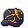 | |
| vein_magmatite.png |
Cima: fumarola dormente com poucas pedras. Baixo: acordada, com mais. A fumarola é o form_vent_cone_* recolorido pela rampa do basalto, ancorado pelo pé (30, 38). As pedras são o rock_small_magmatite_{0,1}, ordenadas pelo pé.
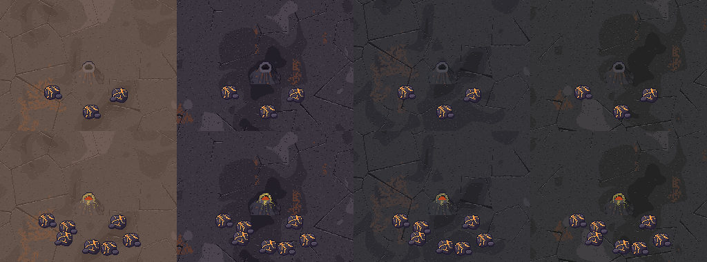
As fissuras agora cruzam a pedra inteira: ficam os veios grossos principais e entra uma rede de rachaduras finas incandescentes (largura 1 px) pela laje, pela rocha e pelo minério de morro, em vez de um ponto só.
*_anim.png, 4 quadros)Tiras de 4 quadros do mesmo tamanho do estático: vein_magmatite_anim.png 256×64, ore_magmatite_anim.png 128×32, rock_small_magmatite_{0,1}_anim.png 128×32. O núcleo amarelo acende e apaga numa onda que desce pelas fissuras (o calor "escorre"), e só a lava dentro das fissuras respira (sem halo). Laço perfeito, ~0,3 s por quadro (1,2 s o ciclo). Os estáticos continuam valendo; a animação é opcional (talvez pra caverna). Sem alpha parcial.
Leitura: a lava laranja salta no basalto escuro de qualquer estágio, e a rocha de basalto (mais escura que as de ferro/silício/gelo) não se confunde com elas.
| Item | Contrato | Freela | Situação |
|---|---|---|---|
| 12 arquivos ore/vein/pickup/icon | 32², 64², 16², 16² | idem | igual (nome e tamanho) |
rock_small.png | 32×32, rocha de 1 tile | 32×32 | igual. Muda o visual: rocha 3/4 com face e pedrinha, sem sombra de chão |
| Cristal do minério na rocha pequena | não é PNG: art.ore_fleck() desenha por código (2 cristais retos) | não tem equivalente | DESVIO. Com a rocha nova o cristal antigo (retângulos) destoa. Proposta extra: fleck_{iron,silicon,ice}.png 32×32 (overlay no tile da rocha, mesma linguagem das pepitas). Precisa de 3 linhas no draw_small_rock |
| Rochas pequenas "por região" | bíblia §11 não tem PNG por região: é o mesmo rock_small + fleck em todas | só uma rocha | sem desvio. A rocha é neutra (mauve) e lê bem nas 4 regiões |
pickup_* | "fora do jogo" (§11), arquivos só ficaram nos assets | tem, 16×16 | gerado por paridade; não é usado |
| Sombra de chão | alpha 0/255 (sem sombra no ore/vein) | idem | sem sombra. O rock_small antigo tinha uma sombra preta (alpha 92) na elipse; o novo não tem |
| Fonte do código | - | ore/vein/icon/pickup saem do items.py do freela, não do make_ore/make_vein/make_icon do objects.py (essas são o desenho antigo e não batem com os PNGs) | informativo: o porte segue o que gerou os PNGs |
rock_small_{iron,silicon,ice}_{0,1}.png (6 novos) | 1 só rock_small + fleck por código; sem variação | - | DESVIO de contrato (pedido do dono): 32×32, mesma âncora, 2 variações por minério. O Dev escolhe a variação por hash do tile, ex.: (tx*73856093 ^ ty*19349663) % 2, estável entre sessões, e a rocha do minério certo (o rock_small neutro e os fleck_* saem de uso se aprovar). A magmatita, quando entrar, segue a mesma regra (MIN com 5 tons, é só acrescentar) |
vein_linha_*.png (3 novos) | vein_* 64×64 | - | veio orgânico v2, mesmo tamanho; se aprovado, substitui o vein_* |
Magmatita: ore_, vein_, icon_, pickup_magmatite.png e rock_small_magmatite_{0,1}.png (7 novos) | não existe no contrato hoje (a bíblia §12 pede a arte "proposta pela Designer") | - | NOVOS (+ 4 tiras *_anim.png de 4 quadros, opcionais), mesmos tamanhos dos outros minérios (32², 64², 16², 16², 32²). Precisam de entrada no contrato da §6 quando o dono aprovar. O Dev escolhe a variação por hash do tile, como as outras rochas. pickup_magmatite só por paridade (soltos saíram) |
Tamanhos conferidos: 13/13 iguais ao contrato atual; extras nos pendentes: fleck_ice.png, fleck_iron.png, fleck_silicon.png, icon_magmatite.png, ore_magmatite.png, ore_magmatite_anim.png, pickup_magmatite.png, rock_small_ice_0.png, rock_small_ice_1.png, rock_small_iron_0.png, rock_small_iron_1.png, rock_small_magmatite_0.png, rock_small_magmatite_0_anim.png, rock_small_magmatite_1.png, rock_small_magmatite_1_anim.png, rock_small_silicon_0.png, rock_small_silicon_1.png, vein_linha_ice.png, vein_linha_iron.png, vein_linha_silicon.png, vein_magmatite.png, vein_magmatite_anim.png.
pendentes/ em assets/sprites/ (mesmos nomes, mesmos tamanhos; nenhum código muda pra eles).ore_*: overlay no topo elevado da parede em (x, y−24), como hoje; nos morros orgânicos o colorize_block recorta pela silhueta (testado na cena).vein_*: 64×64 no canto do 2×2, como hoje. Overlay sem sombra, lê sobre os 4 chãos.rock_small: tile 32×32 no canto, ordenado pelo pé (y+32). Se aprovar o extra, desenhar fleck_{res}.png no mesmo (x, y), logo depois, no lugar de art.ore_fleck.icon_* 16×16: inventário/HUD, sem mudança de código. Conferir o tamanho de leitura no HUD 1:1.rock_small_{res}_{0,1}.png no lugar de rock_small + fleck, variação por hash do tile, mesmo (x, y) e ordem pelo pé.python3 tools/sprites/ores_raw.py e --check.